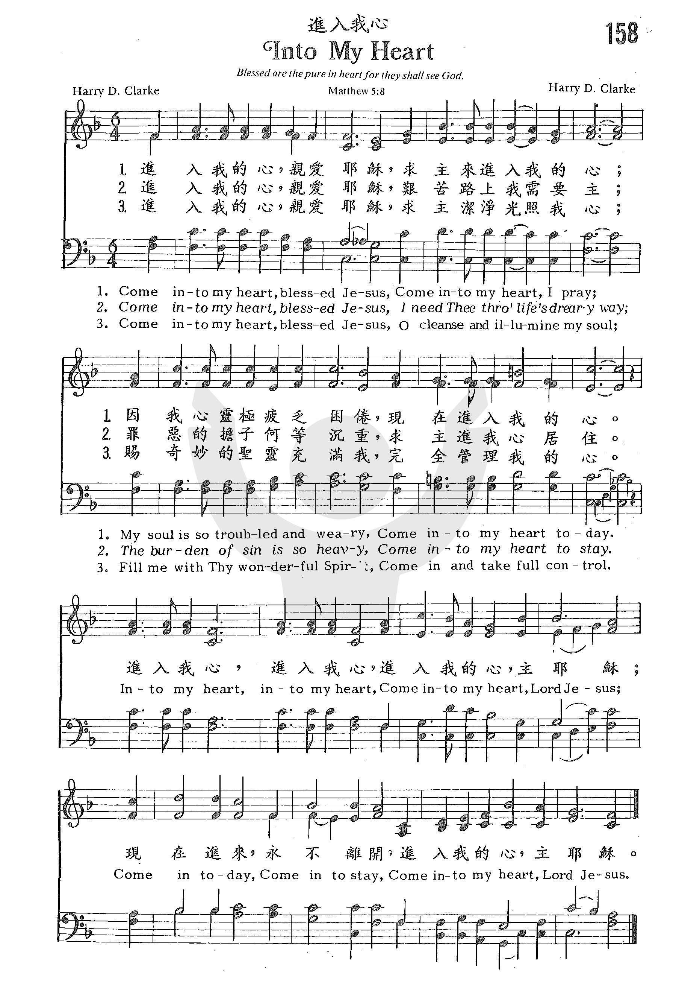

|
|
|
|
158 Into My Heart |
“158p 進入我心 INTO MY HEART.mp3” by DOW YOUNG. Genre: Other. |
|
https://www.zanmeishige.com/tab/25515.html?songbook=1&index=158
 |
|
|
|
|

|
|
|
|
158 Into My Heart |
“158p 進入我心 INTO MY HEART.mp3” by DOW YOUNG. Genre: Other. |
|
https://www.zanmeishige.com/tab/25515.html?songbook=1&index=158
 |
|
|
|
|

1134 Into My Heart 进入我心
| Text: | Into My Heart |
| Author: | Harry D. Clarke |
| Tune: | INTO MY HEART |
| Composer: | Harry D. Clarke |
| Short Name: | Harry D. Clarke |
| Full Name: | Clarke, Harry D. |
| Birth Year: | 1888 |
| Death Year: | 1957 |
Orphaned at an early age, Clarke ran away from the orphanage and worked at sea for almost 10 years. He eventually moved to London, then to America. He attended the Moody Bible Institute, Chicago, Illinois, then went into composing, music publishing, and evangelism. He served as song leader for Harry vom Bruch and Billy Sunday, being so impressed by Sunday that he established the Billy Sunday Memorial Chapel in Sioux City, Iowa (where he served as pastor until 1945). Clarke also worked in the evangelism field in Garards Fort, Pennsylvania, and South Milford, Indiana.
© The Cyber Hymnal™. Used by permission. (www.hymntime.com)
| Title: | INTO MY HEART |
| Composer: | Harry D. Clarke (1924) |
| Meter: | 8.8.8.8 |
| Incipit: | 33313 33135 43244 |
| Key: | F Major |
| Copyright: | Public Domain |
"INTO MY HEART" hymnstudiesblog.
"That
Christ may dwell in your hearts by faith" (Eph. 3.17)
INTRO.:
A song which urges us to have the kind of commitment by which Christ may dwell in our hearts by faith is "Into My Heart" (#658 in Hymns for Worship Revised). The text was written and the tune was composed both by Harry Dudley Clarke, who was born on Jan. 28, 1888, at Cardiff, Wales, and had a very hard youth. Orphaned at an early age, he ran away from the orphanage and went to sea where he worked for almost ten years. Eventually, with the help of a brother he went to London, then Canada, and eventually to America where he attended the Moody Bible Institute at Chicago, IL, in the early 1920’s. After that he went into composing and music publishing, producing many songs and choruses with both words and music which appeared in his Gospel Truth in Song (three volumes), Fishers of Men, Choruses for Fishers of Men (two volumes), and Songs of Glory. Later he sold his copyrights to Hope Publishing Co. The chorus beginning "Into My Heart" was first published in the 1924 edition of Gospel Truth in Song. The stanzas were added in 1927. Other Clarke hymns in common use are "Awake, O Church of Christ," "Fishers of Men," "What Must I Do?" (or "Believe").
In addition, Clarke was active in evangelism, serving as song director for
revival preachers Harry vom Bruch and Billy Sunday. Impressed by Sunday’s work,
Clarke established the Billy Sunday Memorial Chapel in Sioux City, IA, where he
served as minister until 1945. In later life, he conducted his own evangelistic
campaigns with headquarters first in Garard’s Fort, PA, and finally in South
Milford, IN. When the copyrights for "Into My Heart" were renewed in 1952 and
1955, they were owned by Hope Publishing. A couple of years later, Clarke died
on Oct. 14, 1957, at Lexington, KY. Among hymnbooks published by members of the
Lord’s church during the twentieth century for use in churches of Christ, the
chorus appeared in the 1937 Great
Songs of the Church No. 2 edited by E. L. Jorgenson. Today it
is found in the 1971 Songs
of the Church edited by Alton H. Howard; and the 1992 Praise
for the Lord edited by John P. Wiegand; as well as Hymns
for Worship Revised. In both of the last two there is an additional
"stanza" from an anonymous source identified as an "American Folk Hymn."
"Out of my heart, out of my heart, Shine out of my heart, Lord Jesus;
Shine out today, shine out alway, Shine out of my heart, Lord Jesus."
The entire original song is used in the 1977 Special
Sacred Selections edited by Ellis J. Crum.
"Into My Heart" emphasizes the importance of committing ourselves to let Jesus rule our lives.
I. Stanza 1 points out that we need Jesus to give rest to our souls
"Come into my heart, blessed Jesus, Come into my heart, I pray;
My soul is so troubled and weary, Come into my heart today."
A. The heart here is not the physical blood pump but the mind with which we can
think: Prov. 23.7
B. The reason that those who are lost need Jesus to come into their hearts is
that their souls are troubled and weary and they need the rest that he offers:
Matt. 11.28-30
C. They should want Him to come in today because now is the day of salvation: 2
Cor. 6.2
II. Stanza 2 points out that we need Jesus to guide us along life’s way
"Come into my heart, blessed Jesus, I need Thee through life’s dreary way;
The burden of sin is so heavy, Come into my heart to stay."
A. Life’s way is often dreary and we need someone to guide us that we might
follow in His steps: 1 Pet. 2.21
B. One of the the things that makes life’s way dreary is the heavy burden of
sin that we all have to deal with: 1 Jn. 1.8
C. However, we can find help by opening up our hearts to Jesus so that He will
live in us and we in turn can live by faith: Gal. 2.20
III. Stanza 3 points out that we need Jesus to take our guilt away
"Come into my heart, blessed Jesus, And take all my guilt away;
Then spotless I’ll stand in Thy presence, When breaks Thine eternal day."
A. All have sinned, and Jesus came to take the guilt of sin away by offering
forgiveness through His blood: Eph. 1.7
B. When we receive His forgiveness, we can stand spotless in His presence: Eph.
5.26-27
C. His eternal day will break when He comes again and we stand before His
throne: Matt. 25.31-32
IV. Stanza 4 points out that we need Jesus to illumine our minds
"Come into my heart, blessed Jesus, O cleanse and illumine my soul;
Fill me with Thy wonderful Spirit, Come in, and take full control."
A. Jesus not only wants to cleanse us of sin but also to illumine or enlighten
our souls through the knowledge of Him: Eph. 1.17-18
B. To accomplish this, He wants to fill us with His wonderful Spirit, which I
understand to be a reference to the influence of the Spirit
through the word that He revealed: Eph. 5.18
C. In this way, the Lord will come into our hearts and take full control as we
submit ourselves to His will: Jas. 4.7
CONCL.:
The chorus reminds us of the importance of having Jesus dwelling in our hearts.
"Into my heart, into my heart, Come into my heart, Lord Jesus;
Come in today, come in to stay, Come into my heart, Lord Jesus."
While we would not conclude that the person of Jesus Christ literally dwells in
our hearts, the Bible does teach that Christ may dwell in our hearts by faith in
that His spiritual presence is demonstrated in our lives as we make His word the
standard by which we conduct our affairs and obey His teachings. Therefore, I
must commit myself to doing His will in all things so that I will always be
inviting Him "Into My Heart."
Copyright Information: INTO MY HEART: Words & Music:
Harry D. Clarke; © 1924, Ren. 1952 Hope Publishing Company, Carol Stream, IL
60188. All rights reserved. Used by permission. To obtain permission to
reproduce this hymn, visit http://www.hopepublishing.com .
https://hymnstudiesblog.wordpress.com/2008/07/21/quotinto-my-heartquot/